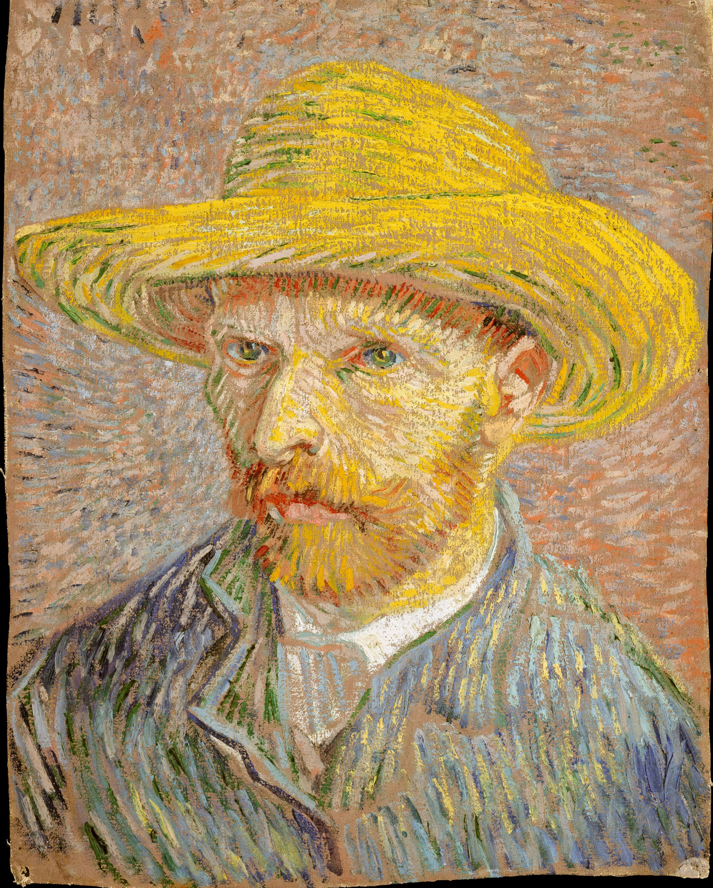

Designer, developer, and creative technologist based in Brooklyn. I build immersive digital experiences that blend aesthetics with functionality.
I specialize in creating responsive, user-centered interfaces that prioritize accessibility and performance. My work includes building interactive web applications using modern frameworks like React and Vue.js, designing design systems for scalability, and crafting micro-interactions that enhance user engagement. Recent projects include a real-time data visualization dashboard for a fintech startup and an e-commerce platform with advanced filtering capabilities.
My writing explores the intersection of technology, culture, and human experience. I contribute technical articles on web development best practices to publications like Smashing Magazine and CSS-Tricks, write creative non-fiction essays about urban life and digital identity, and maintain a personal blog documenting my journey through emerging technologies. I'm particularly passionate about making complex technical concepts accessible to diverse audiences.
Photography is my way of capturing the poetry hidden in everyday moments. I focus on architectural photography, exploring how light interacts with geometric forms in urban environments, street photography that documents the rhythm of city life, and long-exposure nightscapes that reveal the invisible flows of energy around us. My work has been featured in local galleries and online exhibitions, including a recent series on "Digital Ruins" examining abandoned tech spaces.

This is one of my favorite pieces of art—a photograph from The Metropolitan Museum of Art's collection that captures the essence of classical beauty meeting timeless craftsmanship. The image showcases intricate sculptural details, likely from ancient Greek or Roman architecture, where marble has been transformed into flowing drapery and expressive human forms. What draws me to this piece is the masterful interplay between light and shadow across the textured surfaces, revealing the artist's profound understanding of anatomy and movement frozen in stone.
Historically, this type of sculpture emerged during the Hellenistic period (323-31 BCE), when artists moved beyond the rigid formalism of earlier Greek art to embrace more dynamic, emotionally charged compositions. The sculptor—possibly a master from the school of Praxiteles or Lysippos—demonstrates exceptional technical skill in rendering the delicate folds of fabric against muscular definition, a technique that influenced Renaissance masters like Michelangelo centuries later. This particular work may have adorned a temple, public monument, or private villa, serving both aesthetic and narrative purposes in communicating mythological stories or honoring important figures.
This piece resonates with me deeply because it represents the perfect synthesis of technical mastery and artistic vision—qualities I strive for in my own work. Just as the ancient sculptor manipulated marble to create the illusion of softness and movement, I manipulate code and pixels to create digital experiences that feel organic and alive. The photograph itself, captured with modern technology, bridges millennia of human creativity, reminding me that whether working in stone, ink, or JavaScript, we're all engaged in the same fundamental act: making the invisible visible, giving form to ideas, and connecting across time through shared aesthetic experience.